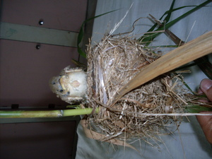

pispis 
/pispis/
n.
n.
the young of all small animals that are still without hair or fur
Eng. young of all small animals
Tag. bulílit
OCM: Fauna (136), Ethnozoology (825)
DDP: Carnivore (1.6.1.1.2), Rodent (1.6.1.1.4), Animal life cycle (1.6.3)
Online dict status: -
Usage level: F
n.
(pispis_te_miyew) kitten
Egkeupian a perem te me pispis te miyew piru egkatameneng a su egpangalusen a layun nikandan.
I love kittens but the worse thing is they scratched me always.
Eng. kitten; cat; cub
Tag. kutíng
Ceb. gamayng iring
Ilo.: bassít nga púsa
OCM: Fauna (136), Ethnozoology (825)
DDP: Carnivore (1.6.1.1.2), Animal life cycle (1.6.3)
Online dict status: -
Usage level: M
Updated by: RJH,AAA,QDL,NJK,QDL
Last updated: 12/Mar/2014
"Pispis" in reader "Ka ngaran te me anak"
"Pispis" in reader "Ka ngaran te me anak"
This page last updated: 03-Jan-2020
Copyright © 2009-2014, Matigsalug Language Christian Association, Inc